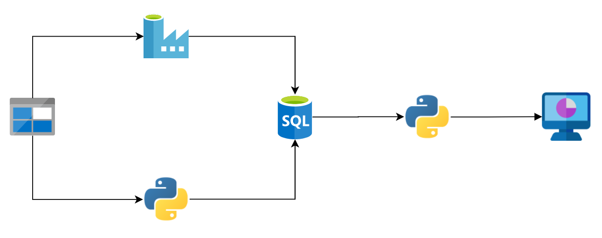
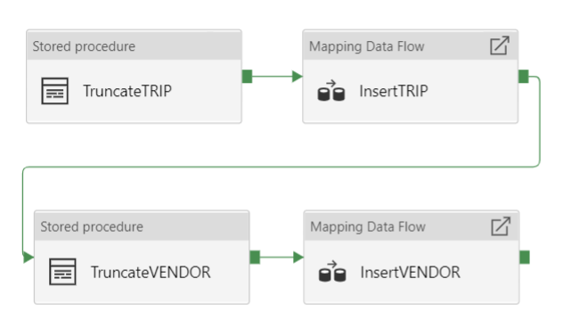
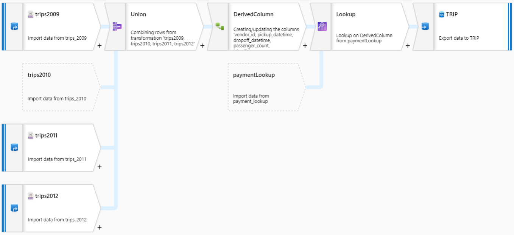
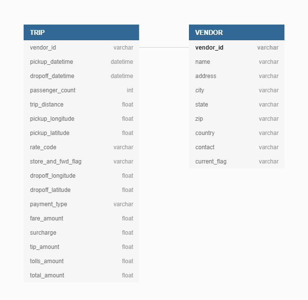
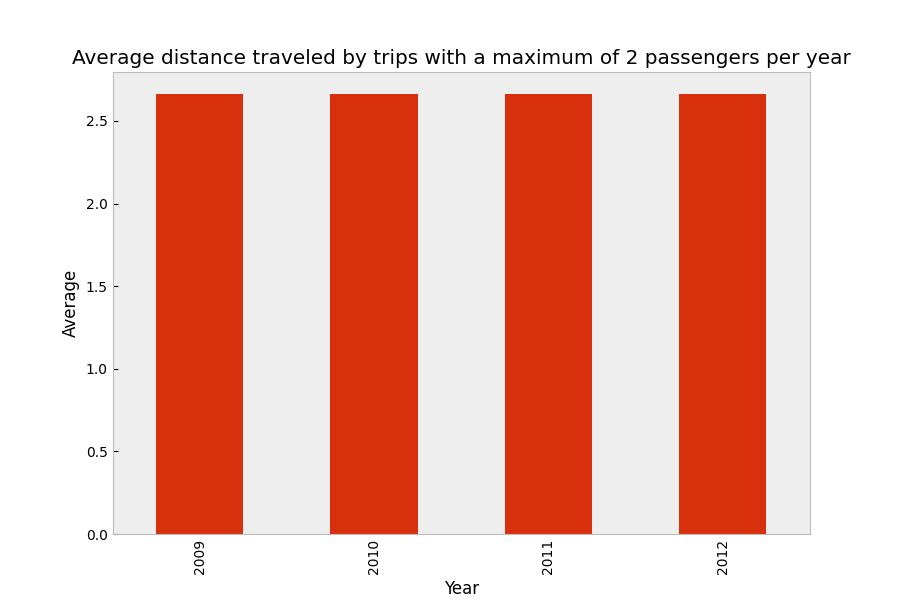
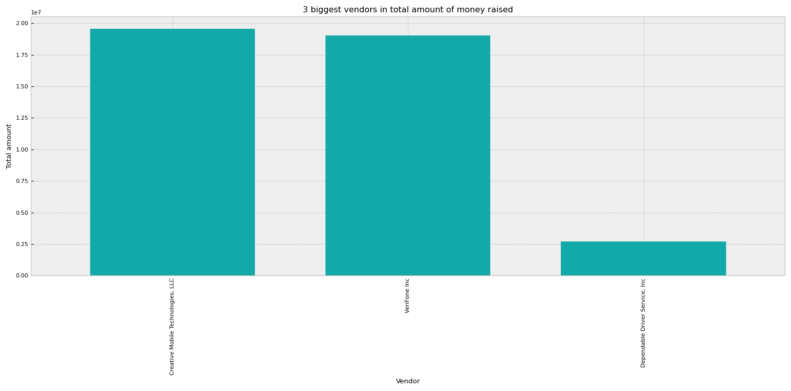
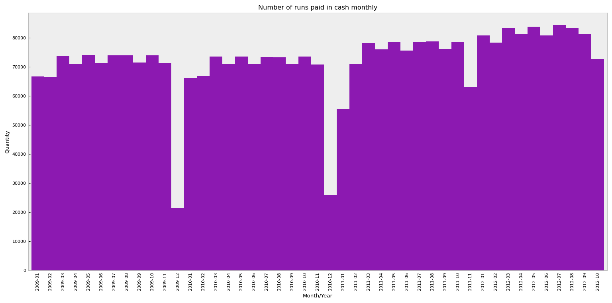
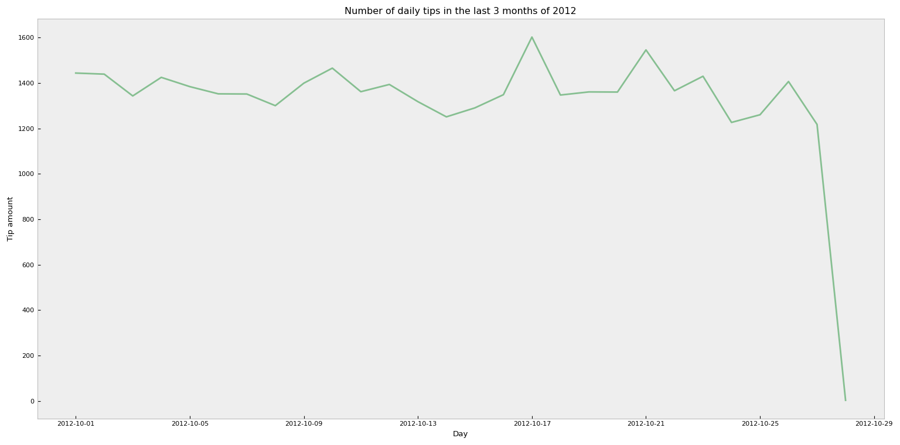
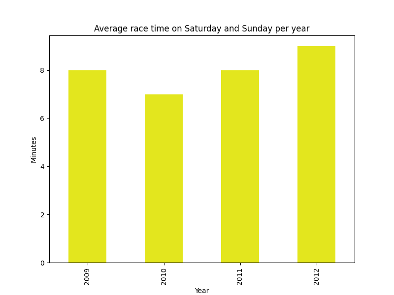

Arquitetura
A estrutura utilizada é composta por recursos e serviços do Microsoft Azure, incluíndo banco de dados e sistema de armazenamento de arquivos. A imagem abaixo demonstra o processo de fluxo de dados de todo o processo, desde os arquivos fonte até a exibição via Python:
Os arquivos de entrada foram dispostos em um container do Storage Account (Blob Storage), e a partir daí, dois meios de carregamento e transformação dos dados foram criados: via Python ou via Azure Data Factory. Na primeira opção, um script ("etl.py") disposto no repositório, realiza a captura dos dados diretamente no Blob Storage, salva em estruturas internas do Python (Pandas dataframe), aplica alguns tratamentos e transformações, e então, salva os dados no Azure SQL.
Para o ETL construído utilizando o Azure Data Factory, o processo de modo geral é bem similar, com a exceção de que tudo é feito através de uma interface online, utilizando programação drag and drop, como segue o exemplo abaixo:
Os componentes InsertTRIP e InsertVENDOR são fluxos de dados que realizam a principal parte do ETL, coletando, transformando e carregando-os em seu destino. Por exemplo, o processo InsertTRIP primeiramente coleta os quatro arquivos json e os une; logo após, aplica alguns tratamentos e uma operação de lookup no arquivo payment_lookup.csv, padronizando a escrita desta coluna. Por fim, os dados são inseridos na tabela TRIP do banco de dados.

Já abordando o banco de dados, o mesmo foi modelado com apenas duas tabelas: uma para armazenar as viagens e outra para armazenar os registros sobre os empresas de táxi. A relação entre elas se dá pela coluna VENDOR_ID (1 para N), como demonstra a imagem abaixo:
Por fim, utilizando T-SQL, é possível buscar as informações no banco de dados e disponibilizá-los para uma aplicação que consuma-os, como é o caso de um script Python.
Análise
Qual a distância média percorrida por viagens com no máximo 2 passageiros?
Para responder a esta questão, foi-se utilizada uma query que calcula a média das distâncias das corridas para cada um dos anos (inferidos a partir da coluna DROPOFF_DATETIME), considerando apenas as corridas com dois ou menos passageiros (utilizando a coluna PASSENGER_COUNT). Concidentemente, podemos observar que o valor para cada um dos anos é o mesmo, 2.663; logo, a média geral de todo histórico também é 2.663.
Quais os 3 maiores vendors em quantidade total de dinheiro arrecadado?
Já nesta questão, a query utilizada somou a quantidade total arrecadada (coluna TOTAL_AMOUNT), agrupando estes valores por vendor (coluna NAME, buscada na tabela VENDOR por meio de uma junção). Após isto, foi-se ordenado decrescentemente os resultados obtidos pela quantidade arrecadada, e mantendo apenas as três primeiras posições. Assim, temos primeiramente, a Creative Mobile Technologies, LLC com $19549084.28, a VeriFone Inc com $19043434 em segundo, e a Dependable Driver Service, Inc com $2714901.72, em terceiro.
Histograma da distribuição mensal, nos 4 anos, de corridas pagas em dinheiro
Para realizar essa distribuição, foi-se utilizada uma query que conta a quantidade de registros em cada mês/ano, considerando apenas aqueles que possuem o tipo de pagamento como dinheiro (coluna PAYMENT_TYPE = 'Cash'). Podemos observar que existe uma certa constância ao longo dos anos, onde o valor se mantém mensalmente entre cerca de 65000 e 80000. Há uma exceção para o mês de dezembro, onde o valor cai bruscamente, provavelmente impulsionado por se tratar de um período de férias ou algo semelhante.
Série temporal contando a quantidade de gorjetas de cada dia, nos últimos 3 meses de 2012
Neste item, a consulta construída somou a quantidade de gorjetas diárias (coluna TIP_AMOUNT), considerando apenas registros do ano de 2012 e dos meses outubro, novembro e dezembro. Entretanto, existem apenas registros para outubro constados na base. Podemos observar que há uma grande diminuição no último dia constado na base (29/10), porém, acredito que assim como os meses posteriores não têm seus registros, este dia possui apenas uma pequena parte deles inclusos no banco, impossibilitando uma análise mais concreta.
Qual o tempo médio das corridas nos dias de sábado e domingo?
Com uma solução bem similar a da primeira questão, utilizamos uma query que calcula a média anual em minutos do tempo das corridas (colunas DROPOFF_DATETIME - PICKUP_DATETIME), considerando apenas os registros relativos a sábados e domingos. Desta maneira, a média geral de todos os anos é de 8 minutos.
